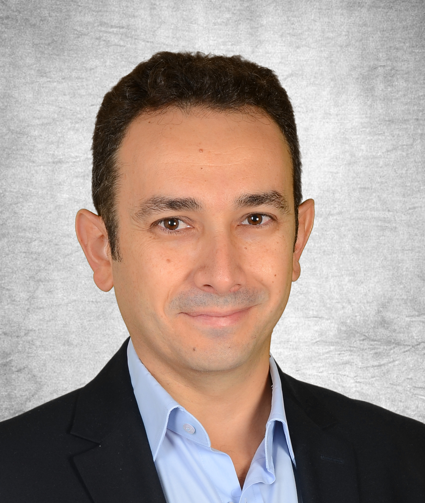
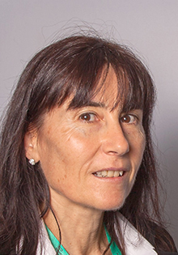
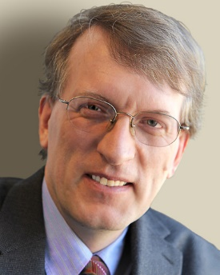
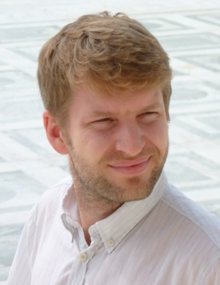

Network softwarization with the usage of SDN & NFV technologies is the paradigm that enables agility, cost effectiveness, vendor independence and heterogeneity requirements of the next generation communication networks. With the pandemic skyrocketing the broadband usage at homes and 5G deployments on its way, operators are looking for ways to increase their fixed broadband coverage in cost effective and future proof ways. Here, network softwarization, together with disaggregation and cloud technologies, may be the yellow brick road that will lead all to success. This talk addresses the open-source efforts world's leading operators have spent to build the SDN enabled broadband access solution, as well as the specification efforts spent in relevant communities. We will see the state-of-the-art in network softwarization, highlighting different trends followed by the industry. Next, we will discuss how these technologies will shape the future of communication.
 Dr. Burak Gorkemli is the Product and Innovation Director in Argela, where he works for the disaggregation and virtualization of the fixed broadband access network, leads the reference design activities in the Open Networking Foundation (ONF) and participates in standardization communities like the Broadband Forum (BBF). He has been in the telecommunication industry for 25 years, where he designed/developed solutions for SS7, GSM and IP networks, managed R&D projects, coordinated patent applications and supervised university collaborations. Dr. Gorkemli holds 11 patents on SDN, NFV, IP and telecommunication technologies.
With ICT representing 5 to 9% of global electricity consumption, and traffic increase leading to more and more demand for resources, optimizing the network is becoming critical to deliver quality services at a reasonable cost and while reducing carbon impact. Virtualization has proven to be quite effective to bring flexibility but complexity of disaggregated networks and dynamic topologies is becoming a challenge to serve real time service request and very heterogeneous traffic patterns. This presentation will highlight some of the use cases and technologies developed to cope with these challenges, including AI and Machine Learning and the evolution towards GreenG.
 Marie-Paule Odini is Distinguished Technologist in HPE Communication Technology Group (CTG) focused on customer innovation and emerging trends in the communication industry including NFV, SDN, IoT, AI and 5G. She holds a worldwide position and drives technical discussions towards 5G with customers and inside HPE around strategy and roadmaps. She also leads CTG standard and opensource group, being personally active in many different forums including ETSI, GSMA, TMForum, NGMN, TIP, 5G Americas and ATIS. She held key positions such as ETSI NFV Vice Chair, IEEE SDN Chair, TIP E2E network slicing co-chair, 5G Americas and GSMA Telco Edge key contributor. Prior to HPE she worked in France Telecom/Orange labs in charge of Value-Added Services for Corporate Enterprise. She holds a Master Degree in EE from Utah State University. She is also teaching telecom at the university.
Marie-Paule is also very concerned with climate change and environmental impact, participating actively to HPE Living Progress program and other personal engagements.
Network management seems to be stuck in the 1990s - enterprise and carrier-grade network devices support SNMP and, less commonly, YANG, but there's essentially no way to create monitoring applications for home or small-enterprise devices from computers to printers to IoT devices and network switches. SNMP itself offers an abstraction that makes programming hard, even if libraries hide the ancient ASN.1 BER encoding that isn't used anywhere else. While YANG is a bit closer to programming models used elsewhere, it does not seem to have been widely adopted. Meanwhile, most network monitoring and configuration seems to rely on traffic analysis using Wireshark and similar tools, along with the traditional command line (CLI) and web interfaces. For cloud services, most programmers are likely to experience network management through cloud-specific proprietary APIs, not network management libraries and protocols. In parallel, the number of engineers trained in networking is dwarfed by those who are cloud-first or mainly care about applications. Data scientists, say, could help many larger organizations better understand their network, but they are unlikely to want to add obscure facets of SNMP or NETCONF/YANG to their skill set. Thus, as networks are becoming a smaller and smaller part of the overall IT ecosystem, we should think about what it would take to modernize notions of network management and make network devices appear like other services. I argue that database models, APIs and event notifications are better foundations for making network services programmable and it's time to abandon the ecological niche model.
 Henning Schulzrinne is Levi Professor of Computer Science at Columbia University. He received his Ph.D. from the University of Massachusetts in Amherst, Massachusetts. He was an MTS at AT&T Bell Laboratories and an associate department head at GMD-Fokus (Berlin), before joining the Computer Science and Electrical Engineering departments at Columbia University. He served as chair of the Department of Computer Science from 2004 to 2009, as Engineering Fellow, Technology Advisor and Chief Technology Officer at the US Federal Communications Commission (FCC) from 2010 to 2017. In 2019-2020, he worked as a Technology Fellow in the US Senate. He has published more than 250 journal and conference papers, and more than 70 Internet RFCs. Protocols co-developed by him, such as RTP, RTSP and SIP, are used by almost all Internet telephony and multimedia applications.
He is a Fellow of the ACM and IEEE, has received the New York City Mayor's Award for Excellence in Science and Technology, the VON Pioneer Award, TCCC service award, IEEE Internet Award, IEEE Region 1 William Terry Award for Lifetime Distinguished Service to IEEE, the UMass Computer Science Outstanding Alumni recognition, and is a member of the Internet Hall of Fame.
The ever-increasing number of degrees of freedom in telecommunication networks imposes severe complexity challenges on management and orchestration. Simplicity, separation of concerns, and open ecosystems have proven to be success principles in the tech industry over the last decades and they are also applicable here. We are approaching a future where intuitive intents drive the creation and removal of ephemeral network and compute slices and where learnings from a given network configuration can be transferred to new settings. The latter is particularly useful for Industrial IoT where reconfigurations are frequent by nature. Particularly in these environments, we can also exploit the cyclic and repetitive nature of industrial processes for a better anticipation of what will happen in the network.
 Markus Gruber manages the Radio Network Automation Department within the Network Systems and Security Research Lab of Nokia Bell Labs with a focus on network optimization algorithms, network slicing, and Industrial IoT toward 6G. Markus is actively involved in the definition of 6G, contributes to shaping the link between Industry 4.0 and communication networks, and has regular customer interactions. Markus holds a PhD in computer science from University of Tübingen as well as engineering degrees from University of Stuttgart and École Nationale Supérieure des Télécommunications in Paris.
In recent years, we have witnessed the emergence of programmable data planes (PDPs). Boosted by reconfigurable Application-Specific Integrated Circuits (ASICs), forwarding devices can be programmed with custom logic while providing per-packet traffic visibility and sustaining hundreds of Gbps, line-rate operation. The programmable network concept - to a significant extent investigated by the research community for a long time - now shows clear signs of having evolved, matured, and found a fertile ground to develop, experiencing the enthusiasm of both academia and industry. In this talk, we will address the "Renaissance" of programmable networks, focusing on PDPs as a unique tool to revitalize network and service management. We will briefly revisit the progress, lessons learned, and challenges of designing innovative management solutions on PDPs. We will also discuss ongoing work and opportunities of how our community can promote the advancement of the field.
Luciano Paschoal Gaspary holds a Ph.D. in Computer Science (UFRGS, Brazil, 2002). He is currently Deputy Dean and Associate Professor at the Institute of Informatics, UFRGS. He is also the current Editor-in-Chief for Springer’s Journal of Network and Systems Management (JNSM). From 2009 to 2013, he served as Managing Director of the Brazilian Computer Society (SBC). Prof. Gaspary has been involved in the area of network and service management for over 20 years. In recent years, his group has made contributions in network function virtualization, virtual networks, as well as in data plane programmability to solve long-standing and emerging management problems. Prof. Gaspary is the author of more than 130 full papers published in leading international peer-reviewed publications and has a history of dedication to a number of research activities. He served as General Co-Chair for LANOMS 2005, TPC Co-Chair of IFIP/IEEE DSOM 2009, TPC Co-Chair of IEEE/IFIP NOMS 2002, General Co-Chair for CNSM 2014, and in several other Organizing Committee roles of past IM, NOMS, and CNSM conferences. Further information regarding Prof. Gaspary’s biography can be found at https://www.inf.ufrgs.br/~paschoal/.